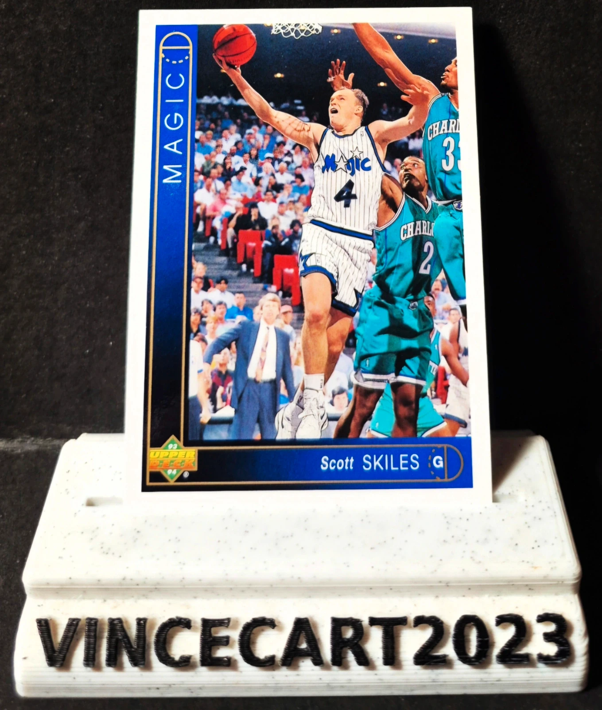

Carte NBA Scott Skiles #17 – Upper Deck 1993-94 – Orlando Magic – Vintage Basketball
1,65 €
🏀 Carte NBA originale Scott Skiles – Upper Deck 1993-94 Je vends cette carte Upper Deck 1993-94 #17 de Scott Skiles, meneur emblématique du Orlando Magic. 📌 Caractéristiques : Joueur : Scott Skiles Équipe : Orlando Magic Collection : Upper Deck 1993-94 Numéro : #17 Carte originale vintage État conforme aux photos (recto/verso) ⭐ Scott Skiles est connu pour avoir réalisé le record NBA de 30 passes décisives dans un match, un exploit historique qui tient toujours. Une carte incontournable pour les collectionneurs de NBA des années 90. 📦 Carte expédiée avec soin